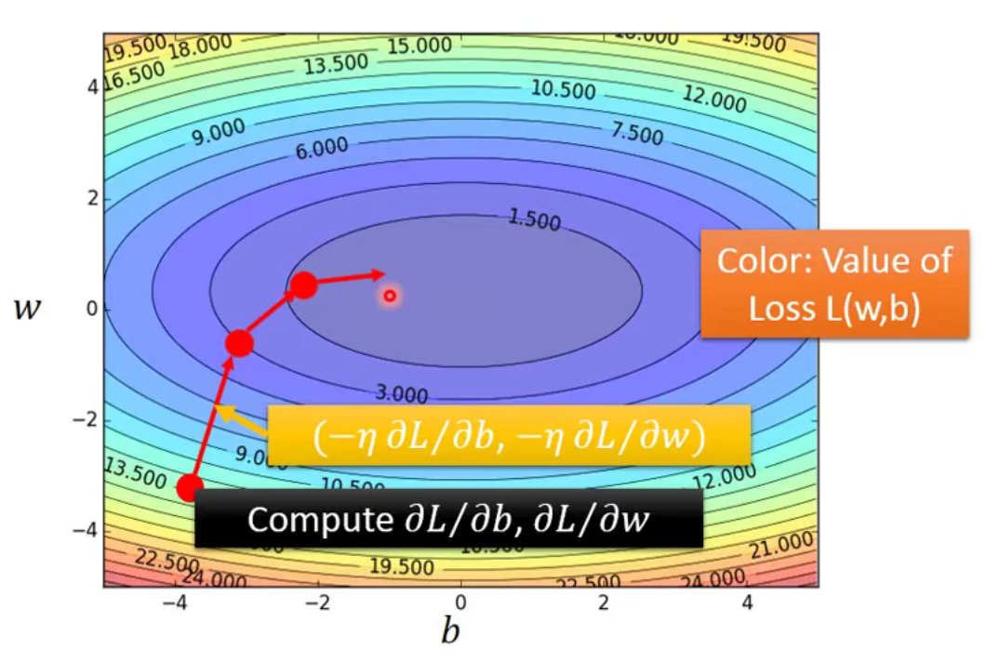

P3 Regression 回归
by Hung-yi Lee - Machine Learning 2017 - P3 Regression
Q：Regression 可以做什么？
A：可以是：预测股票、自动驾驶、推荐等 → f(x) = y (= PREDICT)input x: information → output y: scalar
简单模型（步骤解析）：
以下将以 example：Pokemon进化后的Combat Power预测 展开：

其中 x = or( x_cp, x_s, x_hp, x_w, x_h ) 而预测 y_cp（下文仅设参 xcp）
Recap 做ML的三个步骤：
| Step 1. | 找一个model |
| Step 2. | 定义function set 里 evaluate它的好坏 |
| Step 3. | 找出最好的function |
Step 1: Model
找function set 就是所谓的model #存疑
Model → a set of function: f1, f2, ...
- 这其中： f(x) = y = b + w * xcp (w 和 b 可为任意值)
就可以代入不同w及b，有无限组f(x)。但同时有些显然不合理的function，将会被之后的训练集中筛除。
由于其线性关系，也称为：
Linear model → y = b + Σw_i*x_i
b: bias 偏差w_i: weight 权重x_i: input x
Step 2: Goodness of Function
evaluate function的好坏 ： 1. 收集training data→2. 找出function
- Training data: 10 pokemons (source)

| input xcp | output ycp |
|---|---|
| x1 | y^1 |
| x2 | y^2 |
| x3 | y^3 |
| … | … |
| x10 | y^10 |
- Loss function L:
- 这里input是一个function，output是其估测误差
L(f)input为函数
= L (w, b)即input为w和b
= Σ10n=1 (y^n - f(xncp) )2转化为y^真实值与线性关系预测值偏差的平方，平方为消除符号影响
= Σ10n=1 (y^n - ( b+w*xncp ))2展开

- 图中每个点代表了一组(b,w) 即为一个function
- 颜色越红代表L数值越大，即误差越大，表现越差
Step 3: Best function → Gradient Descent
A set of function →Goodness of function f←GRADIENT DESCENT 梯度递减
- 如何找一个好的function f → 评估以下的 f＊
f＊= arg minf L(f)
w＊, b＊= arg minf L(w, b)
即：取 L(f) 最小时的 f 值 （* arg: argument）
这里可用线代直接解，但是复杂函数需要微分解，并求出微分最小（即微分接近0）
| Step | Gradient Descent |
|---|---|
| 01 | 随机选择初始w0, b0 |
| 02 | 计算w对L偏微分, b对L的偏微分 |
| 03 | 负值(斜率下降) → 往右 / 正值(斜率上升) → 往左 |
| * | step size取决于 a.微分大小 b. η “learning rate” （大时更新幅度大、学习效率快） |
| 04 | 多次迭代后：找出local optimal NOT global optimal (但在linear regression不是问题，下方解释) |
pros：无需穷举所有w对Loss function L(w)做微分
插播解释 local optimal 和 global optimal：
梯度下降（gradient descent）图形上的表达
- 把偏微分排成一个向量（在本例中是向量）
- 偏微分的梯度下降 即为 等高线的法线方向 → 所以它会逐渐往紫色方向走
| Linear | Non-linear |
|---|---|
|  |  |
| 线性回归的损失函数为convex，即 无 local optimal | 但 若非线性回归：即有 local optimal，又有 global optimal 的位置 |
回到Pokemon CP预测：
此时要用新的testing data测试其error → 泛化（generalization）
线性结果 y = (-188.4) + 2.7 * xcp
| Training | Testing | |
|---|---|---|
| Error L(f) | 31.9 | 35 |
最终的线性关系式为 ，其误差为31.9；但 输入另外一组10个Pokemon数值作为testing data，误差为 35。即 预测不准确。
复杂模型（提升准确性）：
OPTION 1: 选择其他model：
| Model | Training data | Testing data |
|---|---|---|
| y = b + w1· xcp+w2·(xcp)2 | 15.4 | 18.4 |
| y = b + w1· xcp+w2·(xcp)2+w3·(xcp)3 | 15.3 | 18.1 |
| y = b + w1· xcp+w2·(xcp)2+w3·(xcp)3+w4·(xcp)4 | 14.9 | 28.8 |
| y = b + w1· xcp+w2·(xcp)2+w3·(xcp)3+w4·(xcp)4+w5·(xcp)5 | 12.8 | 232.1 |
Model维度的提升会增加 training data的准确度，但！ 复杂model导致了testing data很糟糕。
即：OVERFITTING 过拟合 → 选择最合适的model，此例为维度3的。
OPTION 2: 种类划分做不同的regression方程
(前提数据集够多)
| species 1 | species 2 | species 3 and more | |
|---|---|---|---|
| y = | b1 + w1 · δ(xs = s1) · xcp | +b2 + w2 · δ(xs = s2) · xcp | +b3 + w3 · δ(xs = s3) · xcp +… |
其中的 δ() 为Boolean(true = 1, false = 0)的filter，所以实际上整个公式为linear model。

- 尽管训练集和测试集最后的结果差别有点大，但从测试集的error而言比之前的结果都要好。
OPTION 3: 多参数考虑
Back to step 1: 除了CP，还可考虑 hp、weight等参数。
结果是训练误差1.9而测试误差为102.3，即overfitting。Back to step 2: Regularization 正则化
| 原方程 | 新增项 |
|---|---|
| L= Σn (y^n - ( b+Σwixi))2 | +λ·Σ(wi)2 |
- 其中
λ是常数，需要手调；而 新增项 越小越好。
只有w而没有b，因为w影响了平滑程度，而b和平滑程度无关。
但 为什么期待加上这个项越小越好呢？
- 更平滑：使得 → input有变化时，而output不敏感
- 杂讯 noise corrupt input时，smooth function has less influence.
同时，不一定是 λ 更大时会更好；那应该考虑多大的 λ ？
- 转折点使得testing data error最小
- P4的练习用了AdaGrad

P4 Regression 回归
by Hung-yi Lee - Machine Learning 2017 - P4 Regression - Jupyter notebook
η learning rate (lr) 的 update 接近最佳解
- 提高10倍 → 相对接近，但有反复
- 提高100倍 → 反复更多
- 客制化lr → lr for b, lr for w
用的AdaGrad的方法：
lr_b = lr_b + b_grad**2
lr_w = lr_w + w_grad**2
# Update parameters
b = b - lr/np.squrt(lr_b) * b_grad w = w - lr/np.squrt(lr_w) * w_grad
参考：